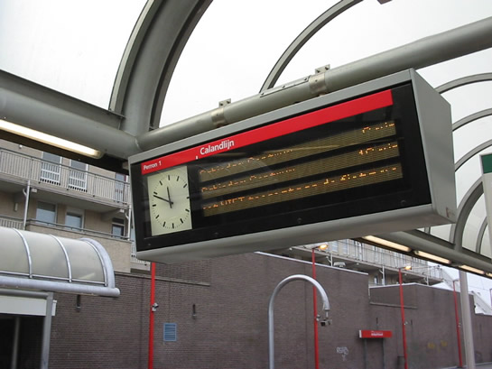

Diverse aanrijdingen op Schout Bontebalpad en meer nieuws...
- dinsdag 09 december 2008 19:05
- Geschreven door Joachim
Het klinkt misschien als een 1 april-grap, maar retmetro.nl moet serieus blijven. Vandaag tijdens één van de fotosessies op de Zevenkamplijn waren we op gelijkvloerse kruising Schout Bontebalpad. Daar moesten we toch veel doden betreuren. Geen mensen, gelukkig niet! AHOB's zijn hartstikke goed, maar: niet voor padden! Zoals sommigen onder ons misschien weten is de paddentrek weer volop aan de gang. Ook in Zevenkamp. Sommige padden halen de overkant van de sneltramkruising wel, maar velen niet. We hebben er wat foto's van, maar we hebben toch besloten om ze NIET op de site te zetten. De foto's bevatten namelijk redelijk uiteengereten padden, niet zo'n leuk aanzicht. Voor de genen die er wel tegen kunnen: gelijkvloerse kruising Schout Bontebalpad.
Communicatieruimte Ambachtsland
De communcicatieruimte op station Ambachtsland, die zwaar beschadigd ruimte tijdens een brand op nieuwejaarsdag, is geheel hersteld. Al enkele weken is de ruimte weer zo goed als in dienst. Ook de DRIM's werken weer, en dat is dus handig voor de reiziger. Op de foto lijkt het alsof de DRIM's nog steeds kapot zijn, maar met een té korte sluitertijd krijg je dit soort foto's:

Onderhoud AHOB's
Vandaag werden diverse AHOB-installaties weer aan periodiek onderhoud onderworpen, de Zevenkampsering en de Rietdekkerweg zijn door de teams van Cegelec volledig gecontroleerd en getest.
Stadhuis
Tijdens de Marathon op 4 april a.s. zal de gehele dag station Stadhuis afgesloten zijn, er wordt NIET gehalteerd op dit station. Station Stadhuis is namelijk precies gelegen op de plek waar de start en de finish zal zijn van de aankomende Marathon. Tevens is het niet toegestaan op deze dag tot 19.00 uur de fiets mee te nemen in de metro!